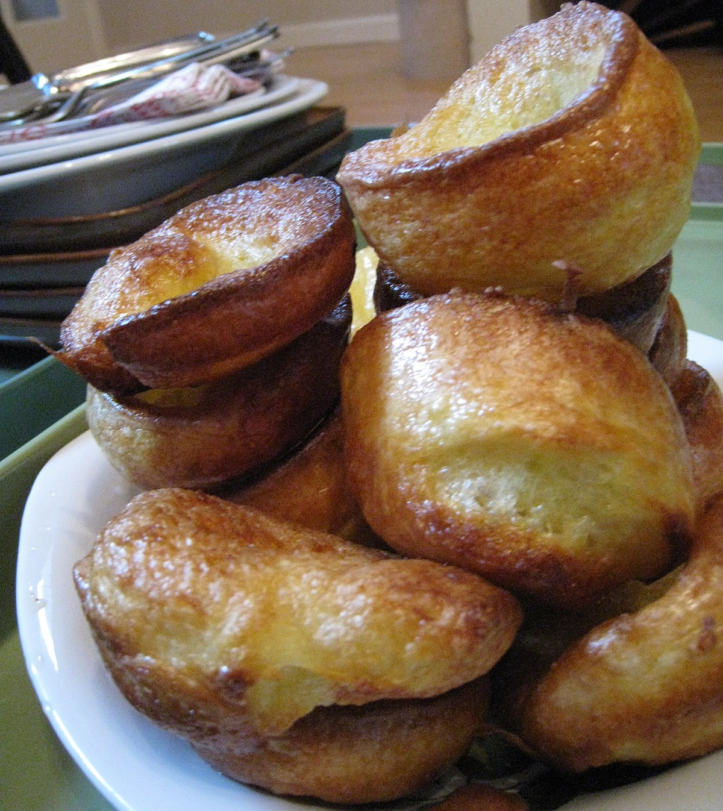

Yorkshire Pudding

Description
Yorkshire puddings were traditionally served
by mothers before a family Sunday lunch,
with the intention of filling up the family
with cheaper ingredients before the more expensive
meat and vegetables were served
The are really easy to make if you've ever made a crepe before.
The secret is making sure the oil is extremely hot before
pouring the mixtures into the baking moulds.
ingredients
Steps
- Put the flour in a bowl
- Make a well in the centre of the flour and break the eggs into it
- Mix the flour and eggs well until a thick paste
- Gradually add milk whilst mixing until the mixture is a creamy consistency
- Leave the mixture to cool while heating the oil
- Pour the mixture into the baking tray and cook until golden
- Hint: Don't be impatient and keep opening the oven door!